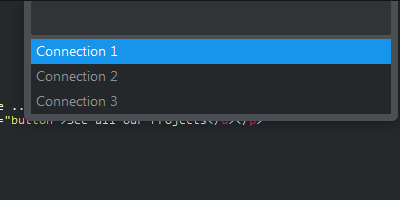

Features
Rapid switching between connections
'ctrl+alt+e'

Installation
With Package Control
Look for the package named SQLExec.With Git
Download the Zip file, extract it to your Sublime Text packages directory, and rename it to SQLExecRequirements
Some directories have to be defined in the PATH environment variable, according to the SGBD that you want to use: "mysql" executable for MySQL, "pgsql" executable for PostgreSQL, "vsql" executable for Vertica, or "sqlplus" executable for Oracle ( Not tested ) You can also specify full path for these command in settings : ( Preferences > Package Settings > SQLExec > Settings - User )
"sql_exec.commands": {
"mysql" : "/usr/bin/mysql"
},
Configuration
Sample configuration file
{
"connections": {
"Connection 1": {
"type" : "mysql",
"host" : "127.0.0.1",
"port" : 3306,
"username": "user",
"password": "password",
"database": "dbname"
},
"Connection 2": {
"type" : "pgsql",
"host" : "127.0.0.1",
"port" : 5432,
"username": "anotheruser",
"password": "password",
"database": "dbname"
},
"Connection 2": {
"type" : "oracle",
"host" : "127.0.0.1",
"port" : 1522,
"username": "anotheruser",
"password": "password",
"database": "dbname",
"service" : "servicename"
}
}
}